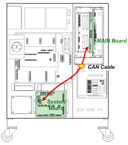
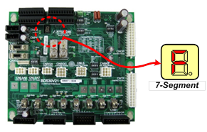
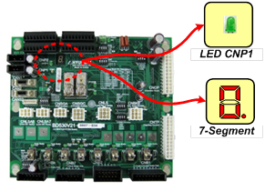

Previous error code: E0022 Abnormal communication between internal modules
1.1.88.1. Outline
When the controller power is inputted, the main board should commence its communication with the system board. However, if normal communication with the system board is not commenced, this error will occur.
1.1.88.2. Causes and examine methods
|
(1) Please check the connection status of CAN communication cable. (2) Check if the program of the system board is removed.. (3) Check the power. (4) Replace the system board. (5) Replace the main board. |
(1) Please check the connection status of CAN communication cable.
Please check if a CAN cable between Main Board and System Boards are well connected. Please remove and reconnect the CAN connectors of Main Board and System Board and check if an error persists, in order to check connector's connection status.

(a) Hi5a-S controller
Main board
(BD511)
(b) Hi5a-N controller
Figure 1.241 CAN Communication Cable Connection between a Main Board (BD511) and a System Board (BD530)
(2) Check if the program of the system board is removed.
When the program of the system board is removed, the 7-segment will display "F." In this case, download the program again using the system upgraded version function.

Figure 1.242 Display of the 7-segment when the program of the system board is removed
(3) Check the power.
Please check if a DC 5V control power is being supplied to System Board properly. If there is a problem with a power, this error may occur as the System Board will not operate.
Please check if a power is being supplied or not by using a simple method. As a below diagram, there are LED CNP1 that indicates DC 5V voltage and 7-segment that indicates the board operating status on an upper right side of System Board.
Table 1-14 Method to Check the whether the Rated Voltage on System Board is Normal or Not
|
Category |
LED CNP1 |
7- Segment |
Contents of the display |
|
1 |
Off |
Off |
Power on a System Board is has not been authorized properly. Please examine the power related parts such as SMPS, Cable, Connector connections etc. |
|
2 |
On |
Off |
Power of IO related board (BD531) that located at the rear of system is not authorized or malfunction. |
|
3 |
On |
On |
Please check the power voltage. |

Figure 1.243 Check whether the DC 5V power is supplied to the system board
If the lights of LED CNP1 and 7-segment DC are all on as above table, please check if the DC 5V control power that authorized on a board is in a range of 5.0V~5.3V.
If the voltage is out of this range, it may effect to the communication. Check points are as below diagram and it the voltage is out of range, please configure it to a range of 5.0V~5.3V from a SMPS.
TB1 Voltage control: DC 5.0~5.3V
TB1 Measuring voltage: DC 5.0~5.3V
Figure 1.244 Measuring a Voltage of DC 5V and Controlling Method
(4) Replace the system board.
If the problem is not resolved even after the cable and power are checked, replace the system board and then check it.
(5) Replace the main board.
If the problem is not resolved even after the cable and power are checked, and the system board is replaced, replace the main board and then check it.